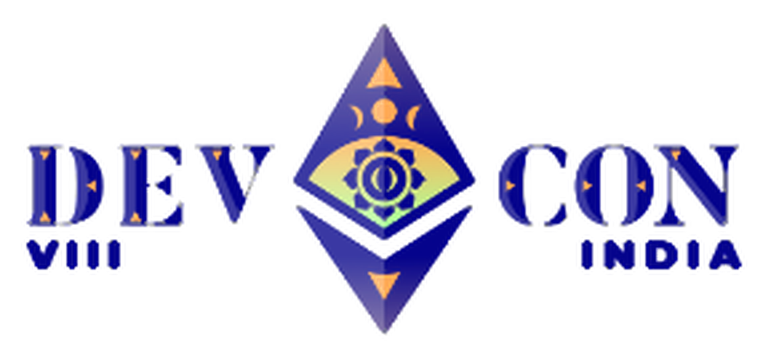
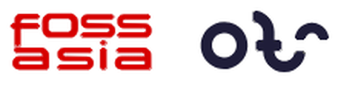

<!doctype html>
<html lang="en">
<head>
<meta charset="utf-8">
<meta name="viewport" content="width=1920">
<title>LLM Request to Kubernetes</title>
<!--
  DevCon India VIII / FOSSASIA OTS 2026 lightning talk. Each <section> is one
  1920x1080 slide. The diagrams on slides 2 to 6 are Excalidraw scenes
  (src/diagrams/*.excalidraw, written by scripts/diagrams.py) rendered to SVG by
  Excalidraw itself (scripts/render_diagrams.js). Slides 1 and 7 draw their
  few sketch strokes with rough.js, the library Excalidraw uses.
-->
<style>
  @font-face { font-family: Inter; font-weight: 100 900; src: url(assets/fonts/Inter.ttf); }
  @font-face { font-family: "Geist Mono"; font-weight: 100 900; src: url(assets/fonts/GeistMono.ttf); }

  :root {
    --bg-a: #F4F2FF; --bg-b: #E9E6FB;
    --violet: #7C3AED; --deep: #5B21B6; --soft: #C4B5FD;
    --ink: #1E1B2E; --muted: #5E5A75;
  }
  @page { size: 1920px 1080px; margin: 0; }
  * { box-sizing: border-box; margin: 0; padding: 0; }
  html, body { background: #D9D4F3; }
  body { font-family: Inter, sans-serif; font-optical-sizing: auto; color: var(--ink); -webkit-font-smoothing: antialiased; }

  .slide {
    position: relative; width: 1920px; height: 1080px; overflow: hidden;
    background: linear-gradient(135deg, var(--bg-a) 0%, var(--bg-b) 100%);
    break-after: page; page-break-after: always;
  }
  .slide svg.ink { position: absolute; left: 0; top: 0; width: 1920px; height: 1080px; overflow: visible; }
  .abs { position: absolute; }
  img.abs { object-fit: contain; }

  /* Chrome shared by every slide. Inter for reading, Geist Mono for headings, labels and code. */
  .mono     { font-family: "Geist Mono", monospace; }
  .devcon   { left: 100px; top: 82px; width: 292px; height: 132px; }
  .place    { right: 110px; top: 104px; text-align: right; font: 600 26px/1.2 "Geist Mono", monospace;
              letter-spacing: .04em; color: var(--violet); }
  .place small { display: block; font: 400 20px Inter, sans-serif; letter-spacing: 0; color: var(--muted); margin-top: 8px; }
  .foss     { left: 106px; top: 974px; width: 220px; height: 56px; }
  .divider  { left: 352px; top: 982px; width: 2px; height: 40px; background: var(--soft); }
  .oe       { left: 376px; top: 972px; height: 60px; width: 172px; }
  .pageno   { right: 110px; top: 988px; font: 500 20px "Geist Mono", monospace; color: var(--muted); }
  .pageno b { color: var(--violet); font-weight: 700; }

  .kicker   { left: 112px; top: 238px; font: 600 21px "Geist Mono", monospace; text-transform: uppercase;
              letter-spacing: .1em; color: var(--violet); }
  .h1       { left: 110px; top: 272px; width: 1700px; font: 600 54px/1.15 "Geist Mono", monospace; letter-spacing: -.03em; }
  .h1 em    { font-style: normal; color: var(--violet); }
  .lede     { left: 112px; top: 352px; width: 1500px; font-size: 28px; font-weight: 400; color: var(--muted); line-height: 1.4; }

  .lab      { font-size: 26px; font-weight: 600; line-height: 1.25; text-align: center; letter-spacing: -.01em; }
  .sub      { font: 400 19px/1.35 "Geist Mono", monospace; text-align: center; color: var(--muted); }
  .num      { font: 700 24px/1 "Geist Mono", monospace; color: #fff; text-align: center; }
  .take     { font-weight: 700; color: var(--deep); text-align: center; letter-spacing: -.025em; }
  .chip     { font: 500 18px/1 "Geist Mono", monospace; text-align: center; color: var(--deep); }
  .code     { font: 700 36px/1 "Geist Mono", monospace; color: var(--violet); }
  .desc     { font-size: 23px; font-weight: 500; color: var(--ink); line-height: 1.3; }
  .cell     { font-size: 24px; font-weight: 500; line-height: 1.3; text-align: center; color: var(--ink);
              display: flex; align-items: center; justify-content: center; }
  .diagram  { left: 0; top: 0; width: 1920px; height: 1080px; }
</style>
</head>
<body>
<section class="slide" data-slide="1"><svg class="ink" viewBox="0 0 1920 1080"></svg></section>
<section class="slide" data-slide="2"><svg class="ink" viewBox="0 0 1920 1080"></svg></section>
<section class="slide" data-slide="3"><svg class="ink" viewBox="0 0 1920 1080"></svg></section>
<section class="slide" data-slide="4"><svg class="ink" viewBox="0 0 1920 1080"></svg></section>
<section class="slide" data-slide="5"><svg class="ink" viewBox="0 0 1920 1080"></svg></section>
<section class="slide" data-slide="6"><svg class="ink" viewBox="0 0 1920 1080"></svg></section>
<section class="slide" data-slide="7"><svg class="ink" viewBox="0 0 1920 1080"></svg></section>

<script src="vendor/rough-4.6.6.js"></script>
<script>
const INK = '#5B21B6', VIO = '#7C3AED', SOFT = '#C4B5FD', TXT = '#1E1B2E', MUTED = '#5E5A75', PAPER = '#FFFFFF';
const TOTAL = 7;

/* ---------- small drawing kit for the sketches on slides 1 and 7 ---------- */
let SEED = 7;
function ctxFor(n) {
  const el = document.querySelector(`section[data-slide="${n}"]`);
  const svg = el.querySelector('svg.ink');
  return { n, el, svg, rc: rough.svg(svg) };
}
const opts = (o = {}) => Object.assign({ stroke: INK, strokeWidth: 3, roughness: 1.1, bowing: 1.1, seed: SEED++ }, o);
const put = (c, node) => (c.svg.appendChild(node), node);
function circle(c, cx, cy, d, o = {}) { put(c, c.rc.ellipse(cx, cy, d, d, opts(Object.assign({ fill: PAPER, fillStyle: 'solid' }, o)))); }
function line(c, pts, o = {}) { const oo = opts(o); put(c, o.curve ? c.rc.curve(pts, oo) : c.rc.linearPath(pts, oo)); }
function underline(c, x1, x2, y) {
  line(c, [[x1, y], [(x1 + x2) / 2, y + 6], [x2, y - 2]], { curve: true, stroke: VIO, strokeWidth: 5, roughness: 1.4 });
}
function text(c, x, y, w, html, cls, style = '') {
  const d = document.createElement('div');
  d.className = 'abs ' + cls;
  d.style.cssText = `left:${x}px;top:${y}px;width:${w}px;` + style;
  d.innerHTML = html;
  c.el.appendChild(d);
  return d;
}
function img(c, src, x, y, w, h, style = '') {
  const i = document.createElement('img');
  i.className = 'abs'; i.src = src; i.alt = '';
  i.style.cssText = `left:${x}px;top:${y}px;width:${w}px;height:${h}px;` + style;
  c.el.appendChild(i);
  return i;
}
/** Footer logos and page number on every slide. The DevCon logo and place line only on the title. */
function chrome(c, top = false) {
  if (top) c.el.insertAdjacentHTML('beforeend', `
    
    <div class="abs place">MUMBAI, INDIA · 5 NOV 2026<small>OTS Main Stage · 16:15 IST</small></div>`);
  c.el.insertAdjacentHTML('beforeend', `
    
    <div class="abs divider"></div>
    
    <div class="abs pageno"><b>${c.n}</b> / ${TOTAL}</div>`);
}
function heading(c, kicker, h1) {
  text(c, 112, 88, 1200, kicker, 'kicker');
  text(c, 110, 122, 1700, h1, 'h1');
}
/** A content slide: chrome, heading, and its Excalidraw diagram on top. */
// Each scene is laid out in slide coordinates. FIT gives the vertical centre of its
// content and how far to move it, so it sits centred between the heading and the
// footer, slightly enlarged now that the top of the slide is free.
const FIT = { 2: [732, -126], 3: [648, -68], 4: [643, -63], 5: [688, -108], 6: [655, -75] }, ZOOM = 1.06;
function diagramSlide(n, kicker, h1, lede) {
  const c = ctxFor(n); chrome(c);
  heading(c, kicker, h1);
  if (lede) text(c, 112, 202, 1500, lede, 'lede');
  const [cy, dy] = FIT[n];
  img(c, `diagrams/slide-0${n}.svg`, 0, 0, 1920, 1080,
      `transform-origin:960px ${cy}px;transform:translateY(${dy}px) scale(${ZOOM})`);
}

/* ---------- slides ---------- */
function slide1() {
  const c = ctxFor(1); chrome(c, true);
  c.el.querySelector('.pageno').remove();
  img(c, 'assets/brand/devcon-hero-art.png', 1236, 216, 684, 864);
  text(c, 110, 316, 1120, 'What actually happens when you send an LLM request to Kubernetes?', 'h1',
       'top:300px;width:1130px;font-size:72px;line-height:1.14');
  img(c, 'assets/brand/speaker-photo.png', 112, 660, 108, 108);
  circle(c, 166, 714, 120, { fill: 'none', stroke: VIO, strokeWidth: 3 });
  text(c, 250, 670, 800, 'Atharva Mhaske', 'lab', 'text-align:left;font-size:40px;font-weight:700');
  text(c, 250, 726, 800, 'Engineer at Cld9.ai', 'desc', 'font-size:26px;font-weight:400;color:' + MUTED);
}

const DIAGRAM_SLIDES = [
  [2, 'The problem', 'Where did this request go?',
   'Platform teams ship LLM features fast. In production, one chat completion is rarely one Pod.'],
  [3, 'The path', 'Follow one request, hop by hop'],
  [4, 'Where it breaks', 'Each hop fails in its own way'],
  [5, 'How OpenEverest solved it', 'provider-kserve turns an Instance into an endpoint'],
  [6, 'Same hops, any stack', 'Three stacks, the same four hops'],
];

function slide7() {
  const c = ctxFor(7); chrome(c);
  c.el.querySelector('.pageno').remove();   // the speaker photo owns the bottom-right corner
  text(c, 108, 150, 900, 'Thank you', 'take', 'text-align:left;font-size:108px;color:' + TXT);
  underline(c, 116, 402, 292);

  text(c, 112, 336, 900, 'Atharva Mhaske', 'lab', 'text-align:left;font-size:46px;font-weight:700');
  const bio = ['AI and Infra Engineer at Cld9.ai', 'Former Google Summer of Code 2026 mentee',
               'Member, OpenTelemetry project', 'I love FOSS and contribute to multiple CNCF projects'];
  bio.forEach((t, i) => {
    const y = 412 + i * 48;
    circle(c, 124, y + 17, 12, { fill: VIO, stroke: INK, strokeWidth: 1.5, roughness: .6 });
    text(c, 146, y, 860, t, 'desc', 'font-size:27px;font-weight:400');
  });
  text(c, 112, 648, 800, 'github.com/atharvamhaske', 'lab', 'text-align:left;font: 600 30px "Geist Mono", monospace;color:' + INK);

  // the speaker, cut out from the event photo, on a soft violet disc
  circle(c, 1600, 600, 640, { fill: '#E4DEFC', fillStyle: 'solid', stroke: SOFT, strokeWidth: 2.5 });
  img(c, 'assets/brand/speaker-cutout.png', 1382, 150, 436, 930, 'object-fit:cover;object-position:top');
}

Promise.all([400, 500, 600, 700].flatMap(w => [document.fonts.load(w + ' 24px Inter'), document.fonts.load(w + ' 24px "Geist Mono"')])).then(() => {
  slide1();
  DIAGRAM_SLIDES.forEach(a => diagramSlide(...a));
  slide7();
  const imgs = [...document.images];
  return Promise.all(imgs.map(i => i.complete ? 0 : new Promise(r => { i.onload = i.onerror = r; })));
}).then(() => { window.__ready = true; });
</script>
</body>
</html>
